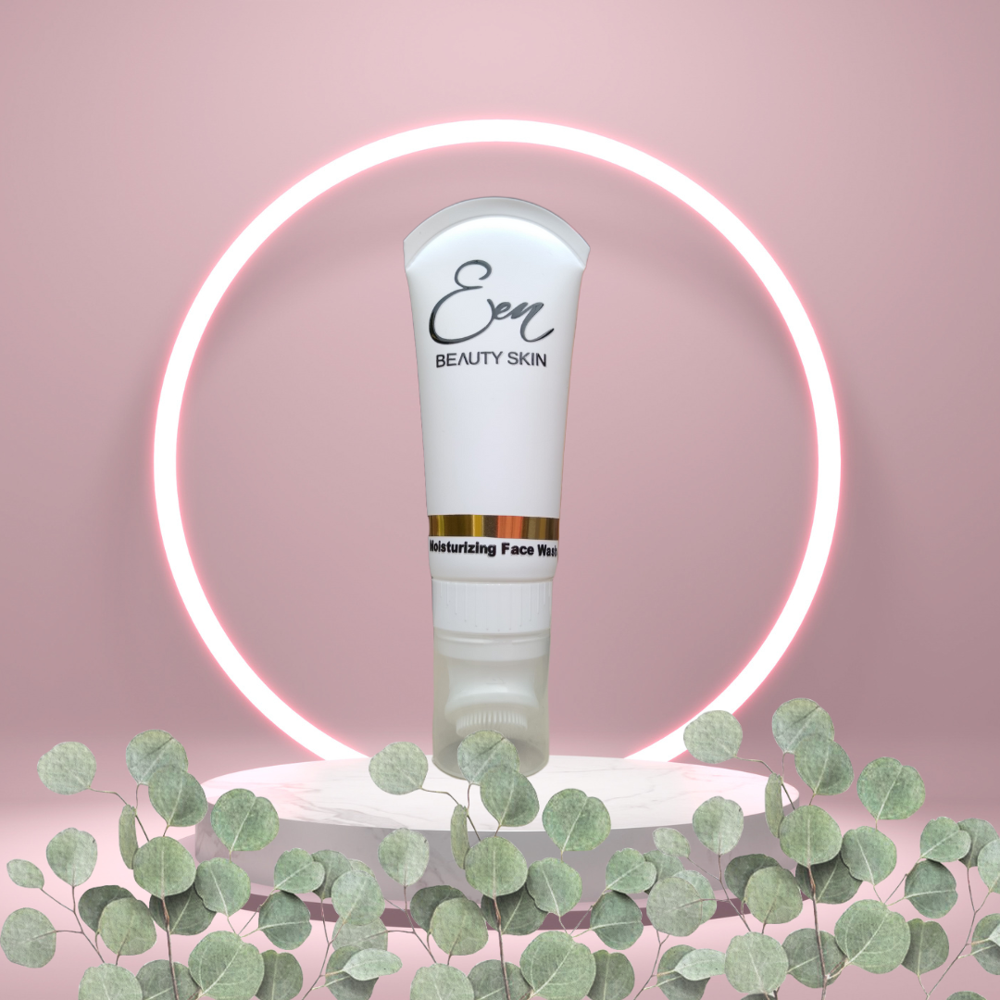

Een Beauty Skin: Perawatan Kulit Lokal yang Menawan
Ditulis oleh Ghryshvi Taushiyah Dzickra. Pada 4 Novermber 2024
Kenalkan, Een Beauty Skin—produk skincare baru yang siap memanjakan kulit Anda dengan sentuhan alami. Dengan tiga varian unggulan, yaitu Day Cream, Night Cream, dan Moisturizing Face Wash, Een Beauty Skin dirancang khusus untuk memenuhi kebutuhan perawatan kulit sehari-hari Anda.
1. Day Cream

Day Cream Een Beauty Skin diformulasikan untuk memberikan hidrasi maksimal dan perlindungan sepanjang hari. Dengan kandungan bahan alami yang menutrisi, krim ini membantu menjaga kelembapan kulit sambil melindungi dari paparan sinar UV dan polusi. Kulit Anda akan tampak segar dan bercahaya sepanjang hari.
2. Night Cream

Setelah seharian beraktivitas, saatnya memberikan perhatian ekstra pada kulit Anda. Night Cream Een Beauty Skin bekerja saat Anda tidur, meremajakan dan memperbaiki kulit. Dengan tekstur lembut dan kaya nutrisi, krim ini membantu memperbaiki kerusakan akibat stres harian, memberikan hasil yang terlihat lebih sehat dan bercahaya saat Anda bangun.
3. Moisturizing Face Wash

Mulailah rutinitas perawatan kulit Anda dengan Moisturizing Face Wash yang lembut. Pembersih ini tidak hanya membersihkan kotoran dan minyak berlebih, tetapi juga menjaga kelembapan alami kulit. Dengan formula yang ringan dan menyegarkan, wajah Anda akan terasa bersih dan segar tanpa rasa kering setelahnya.
Dengan Een Beauty Skin, Anda tidak hanya merawat kulit, tetapi juga mendukung produk lokal yang berkualitas. Dapatkan kulit yang sehat dan bercahaya dengan perawatan yang terinspirasi oleh alam dan cinta untuk kecantikan. Cobalah sekarang dan rasakan perbedaannya!